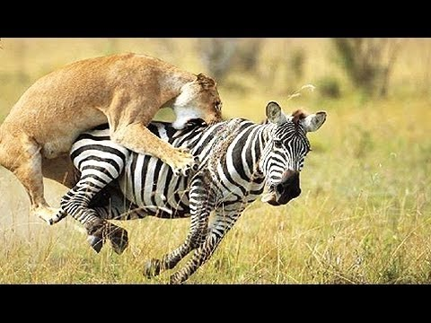
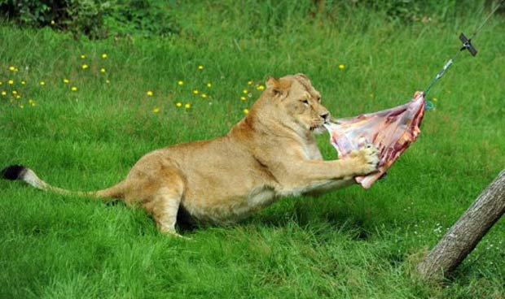

Os leões são animais carnívoros, logo a sua alimentação consiste em carne de animais que vai caçando. Estando no topo da cadeia alimemtar, o leão caça qualquer tipo de presa que deambule o seu território, como por exemplo: girafas, antílopes, zebras... Servem-se das suas poderosas mandíbolas e dentes afiados para partirem osso e cortarem a carne.
A maior parte do leões ainda pode usufruir da liberdade da savana. Contudo, alguns leões são mantidos em cativeiro, como por exemplo em jardins zoológicos, em circos, ect... Nesses meios, as pessoas tentam manter a mesma dieta alimentar de um leão selvagem, dando-lhes carne ainda com ossos. A carne bovina é a mais comum como escolha para a refeição, mas por vezes também lhes dão carne de cavalo e por vezes são-lhes oferecidos outros grandes felinos.
